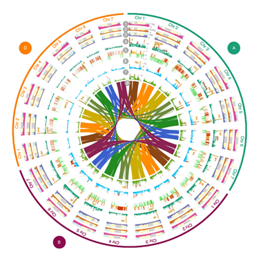

Thibault Leroy
Evolutionary biologist
 Plot Circlize
I am a population geneticist, currently recruited as a full-time university assistant at the department of Botany & Biodiversity research, University of Vienna, Austria. My research is focused on the study of evolutionary forces: gene flow, drift, mutation and selection and their relative importance in divergence and speciation. I have particularly studied fungal, plant and animal models. My interests also include genomics in its wider sense and the statistical methods for population genetics.
Contact:
Thibault Leroy
Department of Botany and Biodiversity Research
University of Vienna, Faculty of Life Sciences
Rennweg 14, A-1030 Vienna, Austria
Webpage Univ. Vienna